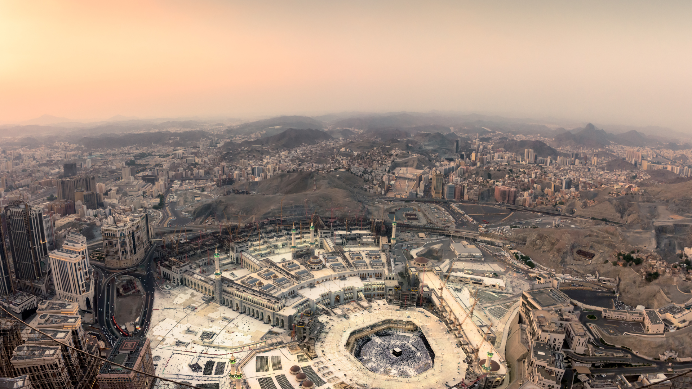
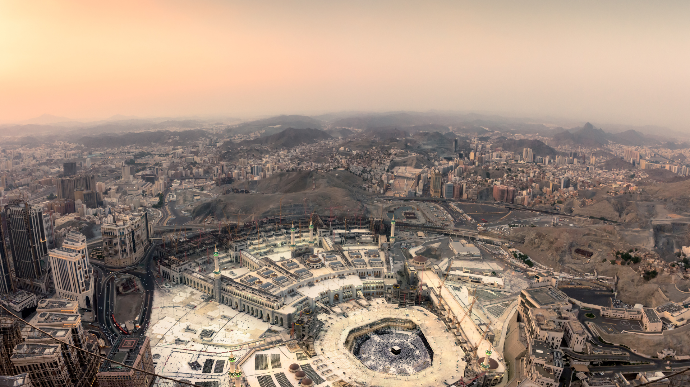
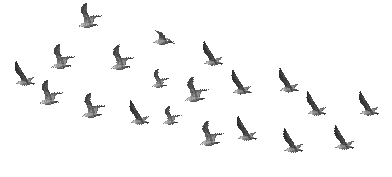
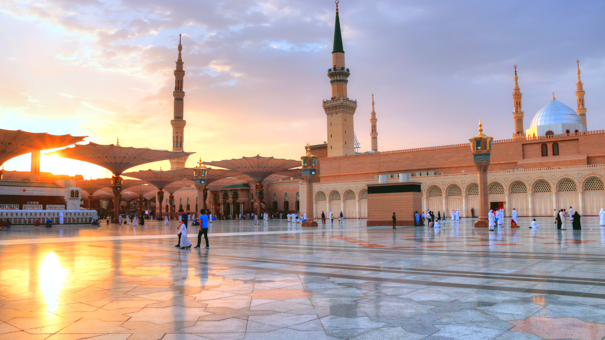
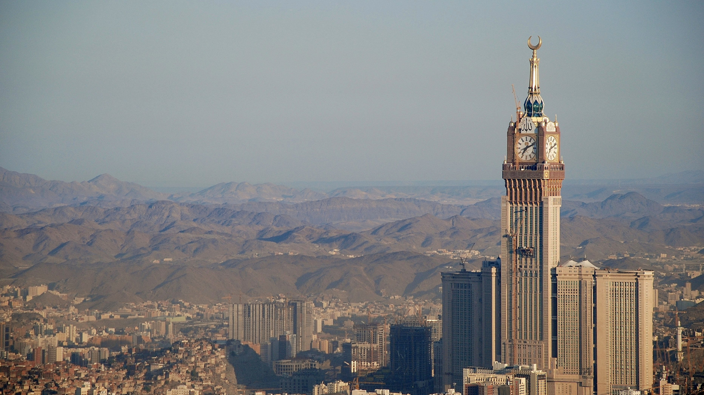
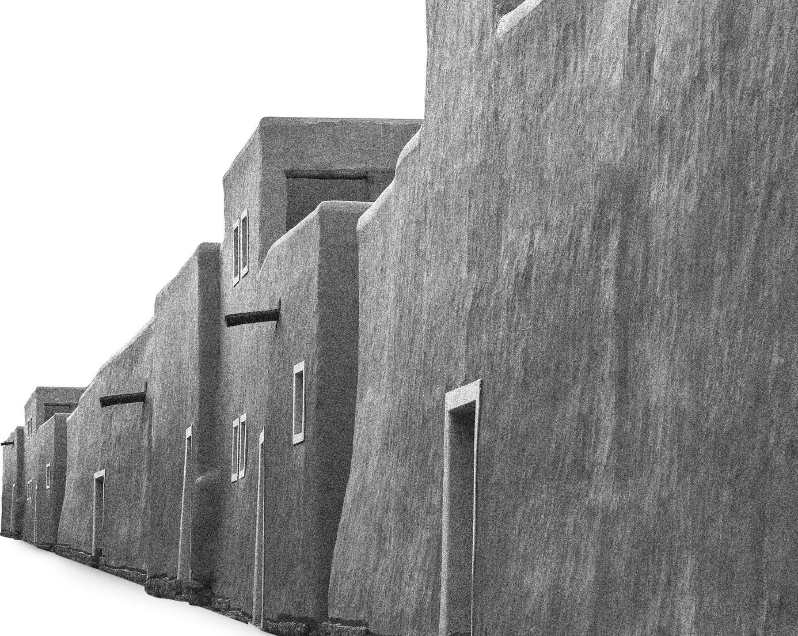
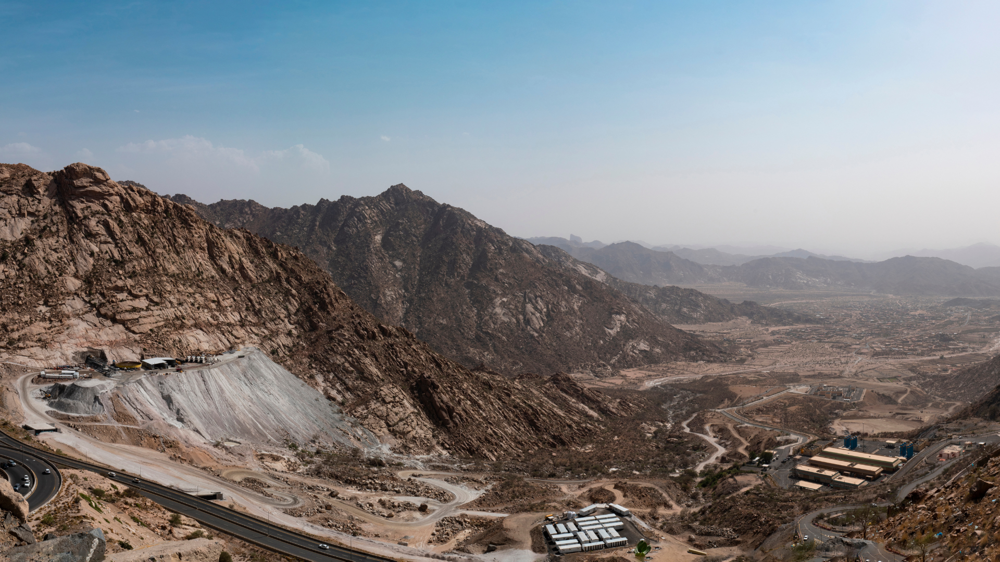

Al Wahi Story
Mecca, the honored city and the cradle of revelation, is the greatest and most blessed city. Allah has made Mecca a place of worship and a qibla (direction of prayer) for Muslims all around the world.
 

The Kaaba, the sacred house of worship, was the first house built for the people of the earth to worship Allah Almighty and to be guided to the path of truth. Prophet Ibrahim laid its foundation upon Allah's revelation to him.
Since then, rulers and guardians have succeeded each other in building and maintaining the Kaaba and expanding its facilities. This continued until Allah blessed this country and its founder, King Abdulaziz (may Allah have mercy on him), where the Saudi state took responsibility for the great shrine and this sacred site.
   These tremendous efforts included unprecedented projects and expansions, such as building infrastructure, public transport systems, networks of services, developing facilities and accommodation, and providing services to the guests of the Kaaba and the Prophet's Mosque.
When Imam Muhammad bin Saud became the ruler and established the First Saudi State, he endeavored to bring unity to the region by ensuring stability within Diriyah and the surrounding towns and tribes and protecting trade and pilgrimage routes. He also regulated and expanded the State's economic affairs and fortified the walls of Diriyah. Following that, the State set out to unify the regions of Najd as the first phase of the Saudi First State's unification, which was completed during the reigns of his sons and grandsons.
